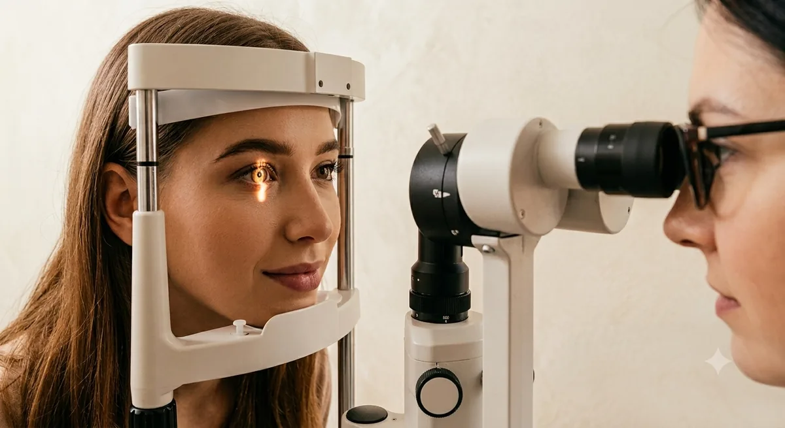
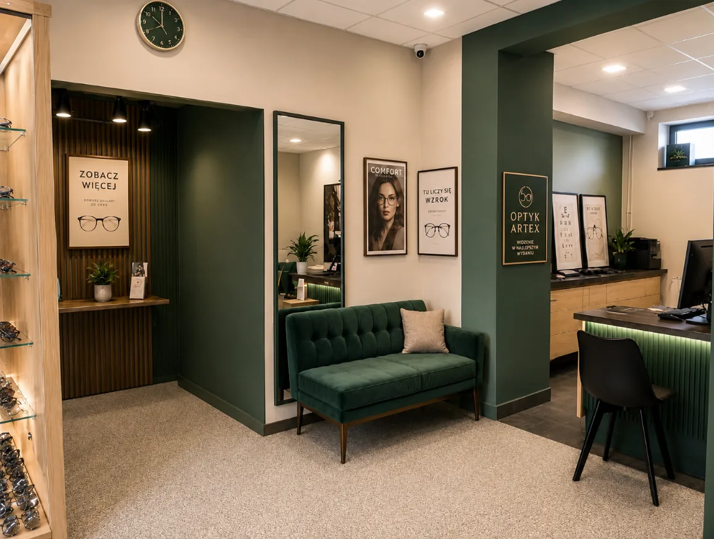

Wtorek
09:00 – 12:00
Przyjęcia w gabinecie okulistycznym.
W salonie ARTEX przy Grunwaldzkiej 2 działa gabinet okulistyczny, w którym badanie wzroku wykonuje lekarz okulista. Na wizytę prosimy umówić się wcześniej telefonicznie — przyjęcia odbywają się we wtorki i środy.

Gabinet okulistyczny czynny jest w dwa dni w tygodniu. Liczba miejsc w danym dniu jest ograniczona, dlatego konieczna jest wcześniejsza rejestracja na konkretną godzinę.
09:00 – 12:00
Przyjęcia w gabinecie okulistycznym.
14:00 – 17:00
Przyjęcia w gabinecie okulistycznym.
531 221 341
14 642 33 05
lub osobiście w salonie.
Poniedziałek–piątek 08:00–17:00
Sobota 08:00–12:00
Grunwaldzka 2, Dąbrowa Tarnowska.
Badanie jest punktem wyjścia do właściwego doboru korekcji. Zależy nam, aby pacjent rozumiał wynik i wiedział, jakie rozwiązanie będzie dla niego najlepsze — dlatego każdy etap wyjaśniamy na bieżąco.

Gabinet okulistyczny i salon optyczny mieszczą się pod jednym adresem, więc zaraz po badaniu możesz przejść do doboru opraw i szkieł — bez umawiania się w kolejnym miejscu i bez drugiego dojazdu.
Szkła i oprawy dopasowane do wyniku badania, codziennych potrzeb i budżetu. W salonie dostępnych jest ponad 10 000 modeli opraw.
Pomoc w wyborze właściwego rodzaju soczewek oraz instruktaż zakładania i pielęgnacji.
Okulary słoneczne wykonane zgodnie z receptą, z filtrami UV i opcją polaryzacji.
Regulacja, naprawa zauszników i flexów, czyszczenie oraz wymiana wsporników.
Na badanie prosimy o wcześniejsze umówienie się na konkretną godzinę. Rejestracja telefoniczna lub osobiście w salonie przy Grunwaldzkiej 2.